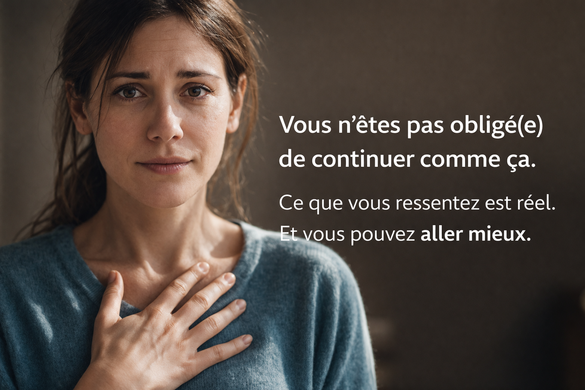
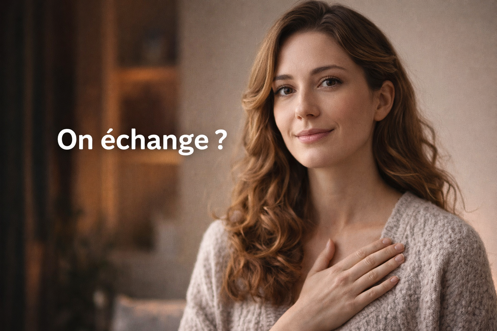

Angoisses & anxiété – Hypnose à domicile en Vendée

Peut-être que vous vivez en ce moment :
- le cœur qui accélère sans raison
- une sensation d’oppression ou de souffle court
- des pensées qui tournent en boucle
- une fatigue nerveuse constante
- la peur que ça recommence
Ici, l’objectif n’est pas de vous demander de tenir encore,
mais de vous aider à redescendre quand ça monte
et à retrouver une sensation de sécurité.
Séance à domicile • ~1h30 • approche douce • respect du rythme
- L’hypnose est un état naturel : vous ne perdez pas le contrôle
- Vous restez conscient(e) pendant la séance
- Pas besoin de savoir lâcher prise
- Un premier échange suffit pour voir si c’est adapté
Quand l’angoisse monte, vous cherchez surtout une chose
Retrouver un peu d’air.
Calmer ce qui s’emballe.
Sentir que votre corps peut enfin redescendre.
C’est exactement le sens de cette page.
Calmer une montée d’angoisse en 2 minutes
Exercice simple de respiration 4–6
- Posez une main sur le ventre
- Inspirez pendant 4 secondes
- Expirez pendant 6 secondes
- Répétez 10 fois
Si vous sentez un léger relâchement, même petit, c’est déjà votre système nerveux qui commence à redescendre.
Si vous êtes ici, c’est peut-être parce que vous cherchez à…
- calmer une crise d’angoisse
- retrouver un peu d’air quand tout monte trop vite
- diminuer la pression intérieure
- apaiser cette boule au ventre
- vous sentir plus posé(e) au quotidien
Ce que vous ressentez n’est pas un manque de volonté.
C’est souvent un système nerveux qui se déclenche trop vite.
Vous vous reconnaissez peut-être si…
- vous êtes tendu(e) même quand tout va bien
- les pensées reviennent sans arrêt
- votre corps réagit vite : cœur, respiration, ventre
- vous vous sentez à bout ou épuisé(e)
- vous avez déjà essayé de vous raisonner… sans vrai effet
L’angoisse n’est pas seulement dans la tête.
Elle s’installe aussi dans le corps.
L’hypnose, concrètement
L’hypnose est un état naturel de relâchement et d’attention intérieure.
Vous connaissez peut-être déjà cet état :
quand le mental ralentit un peu, quand vous êtes absorbé(e), ou quand le corps commence à lâcher.
En séance, on utilise cet état pour aider à modifier certains automatismes :
- réactions de stress trop rapides
- montée d’angoisse
- tension intérieure
- anticipation permanente
L’objectif n’est pas de vous forcer à changer,
mais de vous aider à retrouver un fonctionnement plus apaisé.

Un simple échange permet déjà d’y voir plus clair
Vous n’avez pas besoin de tout porter seul(e) avant de demander de l’aide.
Un premier échange permet déjà de voir :
- ce que vous vivez réellement
- si cette approche peut être adaptée
- comment commencer simplement, sans pression
Ce que l’hypnose peut vous apporter
- redescendre plus vite quand l’angoisse monte
- relâcher les tensions du corps
- retrouver une respiration plus calme
- prendre du recul sur les pensées
- retrouver une sensation de contrôle et de sécurité
On ne cherche pas à faire semblant que tout va bien.
On cherche à ce que vous vous sentiez réellement mieux.
Pourquoi ça fonctionne
Quand l’angoisse monte, votre corps passe en mode alerte.
Le travail consiste à aider votre système nerveux à :
- redescendre plus vite
- se déclencher moins fort
- retrouver un équilibre plus stable
Autrement dit : ne plus subir autant, aussi vite, aussi fort.
Pourquoi à domicile
- environnement familier et rassurant
- moins de pression
- plus simple pour se détendre
- plus de confort et de sécurité
Pour certaines personnes anxieuses, c’est déjà une première étape importante.
Déroulement d’une séance
Avant
On échange simplement sur ce que vous vivez et sur ce que vous aimeriez retrouver.
Pendant
- hypnose douce
- vous restez conscient(e)
- vous pouvez parler et ajuster à tout moment
Après
- intégration
- repères simples
- suite uniquement si nécessaire
Et pour les adolescents ?
L’anxiété touche aussi beaucoup d’adolescents :
- stress scolaire
- émotions intenses
- perte de confiance
- repli ou irritabilité
Les séances sont adaptées :
- au rythme de l’adolescent
- sans pression
- avec une approche simple et rassurante
Un échange avec un parent permet déjà de voir si cela peut être pertinent.
Et maintenant ?
Vous n’êtes pas obligé(e) de continuer seul(e).
Un simple échange permet déjà d’y voir plus clair
et de savoir si cette approche peut vous convenir.
Vous voulez faire un premier point ?
Échange simple, sans engagement. Si ce n’est pas adapté, je vous le dirai.
Cette page concerne l’accompagnement des angoisses et de l’anxiété par l’hypnose.
Elle ne remplace pas un avis médical.